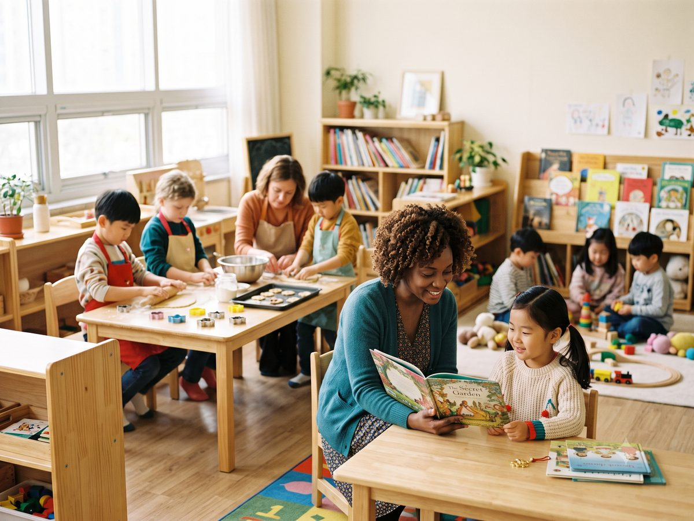

Maria 선생님
원장
키즈인원더를 이끄는 원장으로, 영어를 통해 아이들이 더 넓은 세상을 만나고 자신의 가능성을 발견할 수 있도록 함께 성장합니다.
· 학원 소개
키즈인원더의 이야기는 곧 우리가 영어를 가르치는 방식입니다. 2017년부터 경남 사천 삼천포에서, 아이마다 제 속도로 세상을 넓혀 가도록 곁에서 함께 걸어 왔습니다.
키즈인원더는 화려한 간판이나 빠른 진도를 약속하지 않습니다. 대신 우리는 한 가지를 약속합니다 — 아이마다 다른 속도와 필요에 꼭 맞춘 영어로, 아이가 더 넓은 세상의 문을 열 수 있도록 그 곁에 오래 머무는 일입니다.
영어는 시험을 위한 과목이기 전에, 사람을 만나고 세상을 경험하는 도구입니다. 그래서 우리 아이들은 영어로 낯선 사람과 인사하고, 글을 읽고 자기 생각을 세우고, 그것을 자기 목소리로 말합니다. 이 과정을 충실히 밟아 가면, 좋은 결과는 그 끝에서 자연스럽게 따라옵니다.
영어는 더 넓은 세상으로 나가는 열쇠입니다. 아이들은 교실을 벗어나 다양한 환경 속에서 영어를 자연스럽게 사용하며, 새로운 사람과 문화를 경험합니다.
예를 들어 영국 summer camp, 제네바 국제기구 방문 등 다양한 해외 경험을 통해 영어를 현장에서 직접 사용해 봅니다.
국내 영어캠프는 더 많은 아이들이 영어로 세상을 경험할 수 있는 기회를 만듭니다. 해외가 아니어도, 아이들은 영어로 탐험하고 소통하며 더 넓은 세상을 만나게 됩니다.
체계적인 읽기·독해 프로그램에서 아이들은 글의 중심 생각을 찾고, 그에 대한 자기 의견을 세우고, 그것을 영어로 말하고 발표합니다. 단순히 외우는 영어가 아니라, 비판적으로 생각하는 영어입니다.
어휘와 문법은 이 과정 안에서 자연스럽게 쌓여 갑니다 — 목적이 아니라, 생각을 표현하기 위한 재료로서.

아이마다 제 속도로 자랍니다. 키즈인원더에서는 평균보다 개인을 봅니다 — 아이의 성장과 발달 속도를 지켜보며, 그 아이가 영어에 가장 친근하게 다가갈 수 있는 방법을 연구합니다.
서두르지 않습니다. 비교하지 않습니다. 각자의 속도를 존중할 때 아이는 가장 멀리 갑니다.
· 함께하는 선생님
한 아이의 여러 해를 함께 걷는 선생님들입니다.
원장
키즈인원더를 이끄는 원장으로, 영어를 통해 아이들이 더 넓은 세상을 만나고 자신의 가능성을 발견할 수 있도록 함께 성장합니다.
유아 · 초등 저학년
아이들이 영어를 즐겁고 자연스럽게 받아들일 수 있도록 따뜻하게 이끌며, 자신감 있는 영어의 첫걸음을 함께합니다.
초등 고학년
읽기와 쓰기, 깊이 있는 영어 사고력을 바탕으로 아이들이 한 단계 더 성장할 수 있도록 함께합니다.